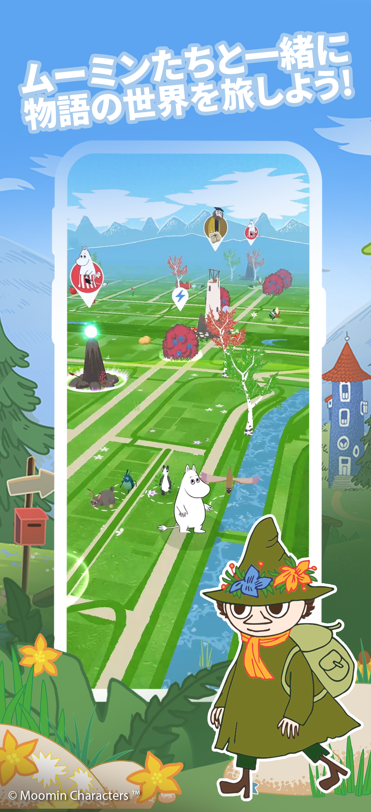
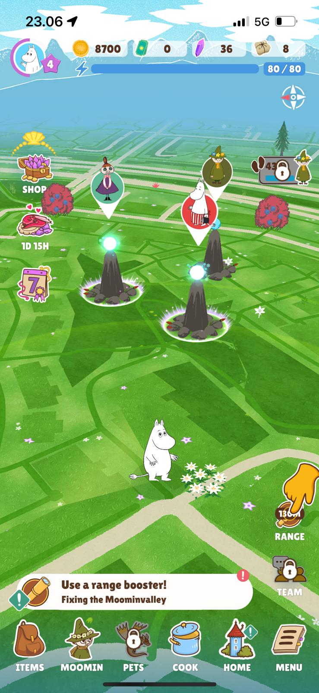
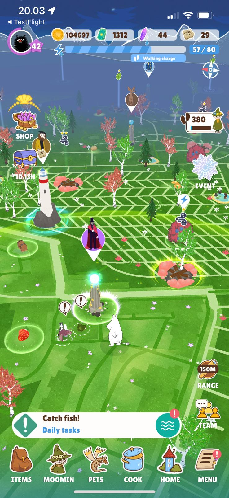
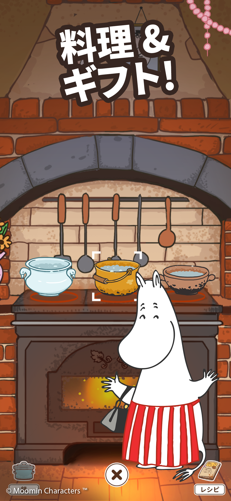
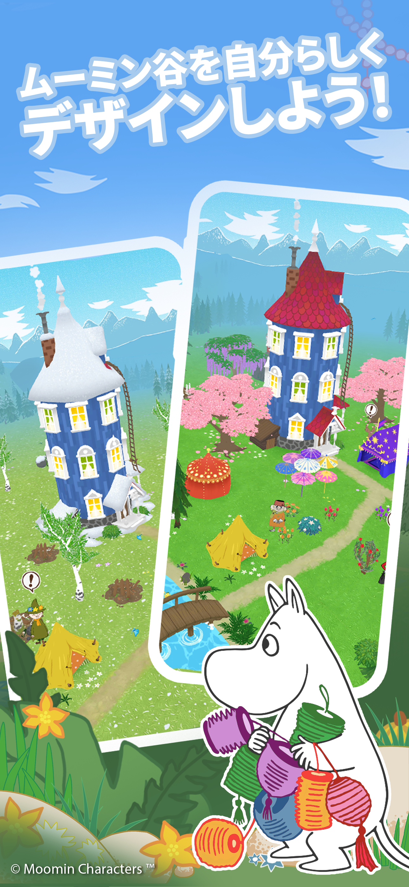
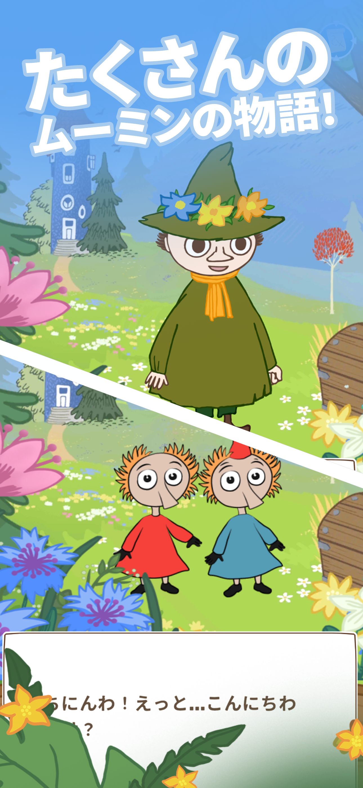
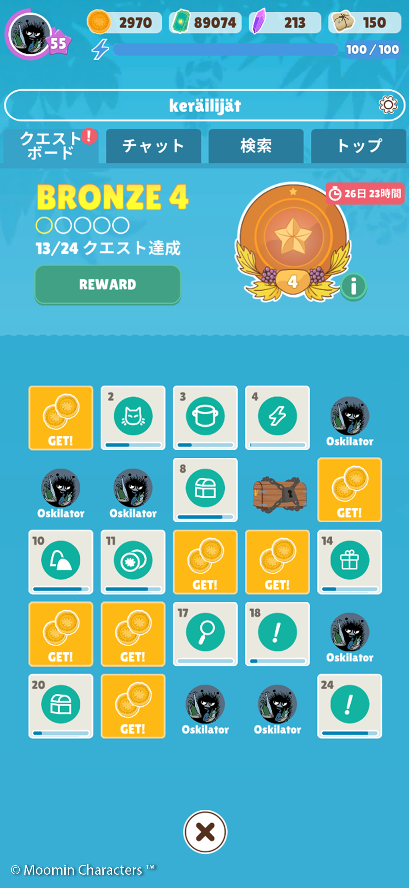

Unclear progression
Players could see many activities, but not always how they connected to a meaningful short- or long-term goal.
Game restructure · Product design · UI/UX
I restructured an evolving game by redesigning its UI, economy, progression, systems, and onboarding around a clearer player journey.

01 / The challenge
Features had accumulated faster than the experience around them. Players faced more screens, currencies, goals, and dependencies without a clear hierarchy explaining what mattered next.
Players could see many activities, but not always how they connected to a meaningful short- or long-term goal.
Base building, cooking, gifting, pets, relationships, and events had grown into a dense network of requirements and rewards.
Repeated blue layouts made different activities feel alike and weakened orientation, hierarchy, and purpose.


02 / Core-loop redesign
I reorganized the product around two understandable loops. Each created resources, goals, and reasons to return to the other.
“A game built around movement should still have something meaningful to offer when the player comes home.”
03 / UI and information architecture
The interface became the organizing layer for the whole game: separating spaces, prioritizing decisions, and revealing detail only when useful.
Map, cooking, valley, friends, shop, quests, and events became visually distinct.
Goals, rewards, requirements, and primary actions were easier to scan and compare.
Resources and upgrades showed where they came from, what they enabled, and why they mattered.



04 / Onboarding
The redesigned onboarding reduced simultaneous information, connected instructions to immediate goals, and delayed systems until the player had a reason to use them.
One guided action at a time.
Help a recognizable character.
Keep later systems out of the player's working memory.
Show the personal journey beyond the tutorial.
05 / Progression and economy
The restructure clarified sources, sinks, unlocks, and dependencies. Systems could remain deep because the player no longer had to understand all of them at once.
Gifting and character goals turn resources into emotional progress.
Furniture affects visitors, parties, seasonal goals, and expression.
Passive support reduces collection friction and creates long-term investment.
Cooperation creates shared motivation without mandatory competition.
Clear milestones show what opens next and where effort creates lasting value.
Readable sources and useful sinks connect collection, upgrades, and optional spending.

06 / Product transformation
The result was a more coherent free-to-play product with clearer navigation, stronger progression logic, and less information competing for attention at each step.
The product moved from accumulated features toward a clearer hierarchy of goals, loops, systems, resources, and long-term progression.
I worked hands-on across product direction, game systems, UI/UX, information architecture, onboarding, economy, progression, and implementation.
Systems thinking, close implementation work, and the willingness to remove, regroup, or delay ideas when they made the player journey harder to understand.